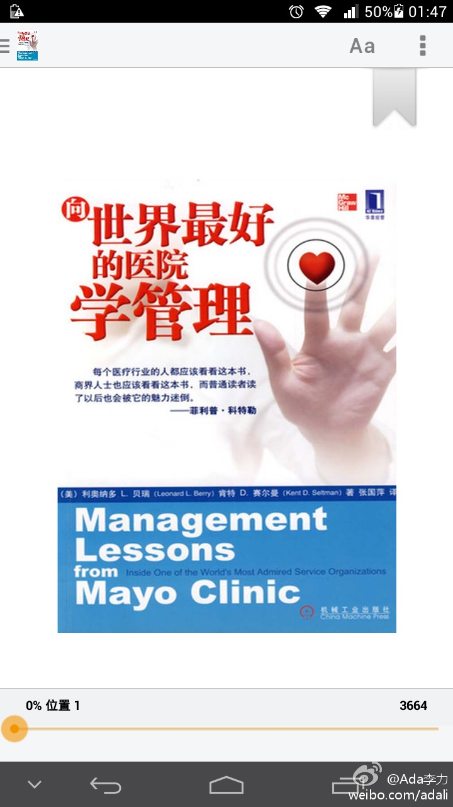

#读书# 梅奥诊所让人惊奇的一点是从来不会有员工说：“这不归我管”，员工要信奉“患者至上”。梅奥诊所认为它的战略就是它的价值观，而严格的招聘过程让它能挑选出符合它价值观的应聘者。

Ada李力
2014-05-10
Ada李力
2014-05-10
因为想了解医疗行业，看完了这本《向世界上最好的医院学管理》，不推荐，整本书读起来特别像官方发言稿。而且，美国医院的经验估计搬不到中国来。但国内医疗行业有什么人文相关的书吗？估计没有。
- 

Ada李力
2014-05-10
新进入一个陌生领域，首先强调“敬畏之心”是怎么也不为过的，但无惧也要一直放在心中。